別のモデルファイル(.evomdl)を読み込み、アクティブなドキュメント内で同一の要素の置き換えたり、新しい要素のインポートすることができます。
これにより、複数の設計者で1つのモデルを構築することができます。
ファイルメニューの"マージインポート"でファイル選択ダイアログが表示されます。
インポートするモデルファイル(.evomdl)を選択します。
ここで指示するモデルファイルは、アクティブなドキュメントから派生したファイル（エクスポートまたは別名保存したファイル）である必要があります。
ファイルを選択すると、選択したモデルとアクティブなモデルとの差分が計算され、ツリー形式表示されます。
インポートする要素を選択し、OKボタンで実行します。
利用例は、二重底モデルを複数人で設計を参照してください。
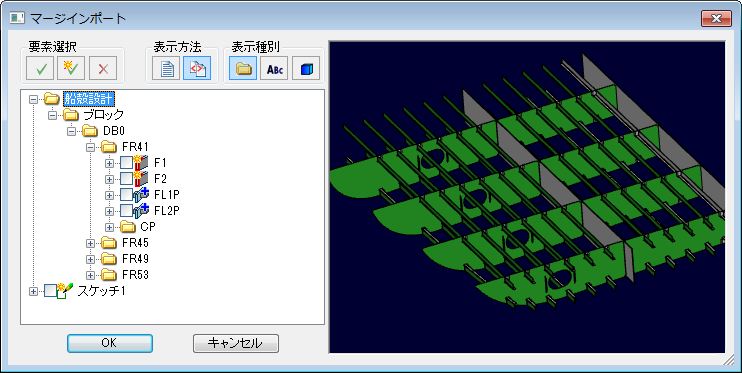
左側にモデル構成情報、右側に選択したファイルのプレビューが表示されます。
要素タイプに応じたアイコンが表示されます。
アクティブなドキュメントにない新しい要素は、アクティブなドキュメントから変更されている要素は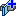のようになります。
また、新しい要素と変更された要素にはアイコンの左側にチェックボックスが表示され、インポートするかどうか選択することができます。
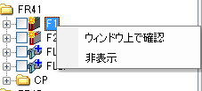
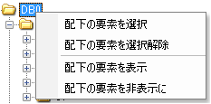
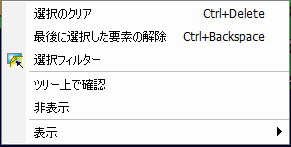
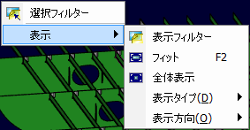
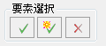
変更されている要素と新しい要素を全て選択します。
新しい要素のみ全て選択します。
現在選択されている要素を全て解除します。
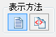
元のモデルファイル内の要素を全て表示します。
２つのモデルを比較して相違点がある要素のみ表示します。（デフォルト）
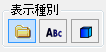
要素グループ別に並べて表示します。（デフォルト） グループに属さない要素は一番下に表示されます。
要素の名前順に並べて表示します。
モデル構成ウィンドウのように、要素のタイプ別に並べて表示します。
ツリー上で選択された要素がアクティブドキュメントにインポートされますが、要素の依存関係で不整合が起こらないようにシステムが自動で関連要素をインポートするように動作します。以下にいくつか例を挙げます。
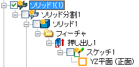
分割されたソリッドを選択すると、関連する分割元のソリッドを含めて全てインポートされます。
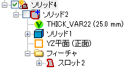
インポート元のモデルファイル内のボディに置き換わります。
アクティブなドキュメント内のボディにスロットフィーチャーが追加されます。